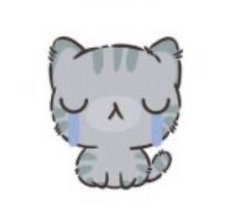

Обо мне
Меня зовут Зарубина Анастасия
Моя почта: n.zarubina22@gmail.com
"Ничто не длится вечно. Ты живёшь только один раз. Поэтому Живи своей жизнью, а не жизнью других людей. Используй все шансы и никогда не жалей, никогда. Делай то, что ты хочешь делать прямо сейчас, иначе потом будет поздно. Ведь когда-нибудь всё, что ты совершал в прошлом, станет тобой. ... Не так ли?" © Ким Намджун (RM)
3 слова, которыми можно описать меня:
Добрая
Неуверенная
Застенчивая
3 карты настроения
Весёлая
Грустная
Сейчас
Любимые фильмы:
-
"Bring the Soul: The Movie"
Документальный сериал включает в себя 6 эпизодов, снятых во время прошлогоднего мирового тура.Этот фильм — история одного из дней музыкантов из популярной корейской группы BTS. Миллионы фанатов по всему миру, многочисленные выступления и хитовые альбомы — всё это они. На следующей день после финального концерта тура «LOVE YOURSELF» они оказались на одной из парижских крыш, где делятся своими личными впечатлениями и моментами от новых городов и выступлений перед любимой публикой.
"Break the Silence: The Movie"
Фильм-концерт солд-аут стадионного тура BTS «Love Yourself: Speak Yourself», в фильм также вошли закулисные кадры мемберов BTS и их собственный взгляд на пройденный тур. Фильм даст зрителям возможность взглянуть на семь человек, стоящих за сценическими персонажами, которые расскажут о своих мыслях и чувствах. Когда корейская группа BTS завершила мировое турне Love Yourself: Speak Yourself, она поднялась на самую вершину своей популярности. Более того, ребята стали первым корейским коллективом, выступившем на стадионе Уэмбли в Лондоне. В документальной ленте открывается доступ ко всему, что происходило за сценой во время выступлений в Лос-Анджелесе, Нью-Йорке, Чикаго, Лондоне, Париже, Сеуле, Осаке и других городах. Всё, что до этого не произносилось вслух, станет доступным.
"BTS In The Soop"
Действие шоу происходит в лесу. Концепция состоит в том, чтобы проводить время, выполняя действия, которые «где-то между повседневной жизнью и отдыхом». Участники будут создавать свои собственные графики заранее и проводить время, наслаждаясь хобби. Хотя каждый из участников будет делать разные вещи, семеро из них будут проводить время вместе в одном и том же месте.
"BTS Bon Voyage"
Группа BTS отправляется в увлекательное путешествие, где их ждет масса увлекательных приключений. Им нужно будет постараться показать на что они способны. Парням никто не станет помогать, они будут вынуждены стараться самостоятельно планировать свой день, стараться выжить в непростых ситуациях, не теряться и делать все, чтобы их путешествие было поистине увлекательным. То как пройдет их отпуск и смогут ли они найти себе развлечение будет зависеть только от них. Им не станут помогать менеджеры, которые обычно всегда рядом и помогают парням сделать все, чтобы не натворить бед. Им так же придется постараться и правильно распределить свой бюджет, определить, что именно им нужно взять с собой. Ребята уверены, что это путешествие будет поистине незабываемым и они смогут справиться со всеми трудностями, которые их будут только ждать. Они докажут, что на них можно положиться, они вполне самостоятельные и способные.
"BTS Bon Voyage 4"
Представители коллектива BTS привыкли к постоянным гастролям, где им приходится выкладываться на все сто, но при этом музыканты никогда не чувствуют себя одинокими. Они всегда окружены помощниками, среди которых стилисты, менеджеры, костюмеры, модельеры, дизайнеры и прочие личности, от которых зависит успех выступления популярных исполнителей. В этом реалити зрителям предстоит увидеть, на что в реальных условиях способны представители команды BTS, когда их не окружают помощники. Главные герои отправляются в путешествие, где им предстоит самостоятельно заботиться о себе и преодолевать трудности, рассчитывая только на собственные силы и способности.
Предметы и их оценки
| Предмет | Преподаватель | Оценка |
|---|---|---|
| Архитектура вычеслительных систем | Ломакин О.М | 90 |
| Дискретная математика | Татаринова О.А. | 60 |
| Начертательная геометрия | Федченко Г.В. | 66 |
| Основы графической композиции в виртуальной среде | Глибко О.А. | 60 |
| Иностранный язык | Шеина Л.О. | 89 |
| Объектно-ориентированое программирование | Водка О.О. | 70 |
| Правознавство | Кузьменко О.В. | 90 |
| Физическое воспитание | Ширяева С.В. | 95 |